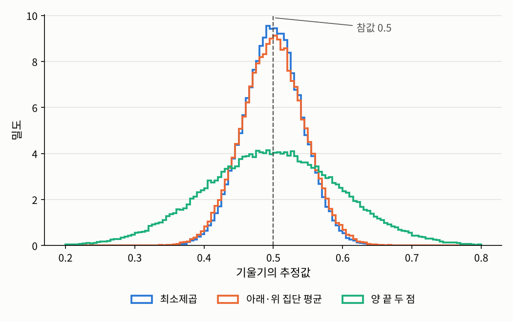

3.2 최소제곱 추정량과 가우스-마르코프 정리
3장 선형 회귀와 분산분석 · 최소제곱법은 왜 좋은 방법인가
들어가며
3.1절에서 최소제곱법은 “제곱 위험을 최소로 하는 함수를 찾는다”는 원리의 표본 버전으로 자연스럽게 나왔습니다. 이번 글에서는 선형 회귀 모형이 맞다고 가정하고, 최소제곱 추정량을 실제로 계산한 뒤 그 성질을 1장의 관점에서 따져 봅니다. 평균적으로 참값을 맞히는지, 얼마나 흔들리는지, 그리고 다른 추정 방법보다 나은지입니다.
마지막으로 1장 소개 글에서 던진 질문, “왜 하필 최소제곱법인가”에 대한 두 가지 답을 정리합니다.
문제 1: 최소제곱 추정량을 어떻게 계산하는가
문제 상황
학생 50명에 대해 두 설명변수 \(x_1\)(예를 들어 공부 시간)과 \(x_2\)(예를 들어 수면 시간)를 기록하고, 반응변수 \(y\)를 측정했다고 합시다. 모형은
\[Y_i = \beta_1 + \beta_2 x_{i1} + \beta_3 x_{i2} + \varepsilon_i, \qquad i = 1, \ldots, 50\]
입니다. 설명변수가 하나뿐이면 손으로도 최소제곱 직선을 구할 수 있지만, 설명변수가 여러 개면 식이 금방 복잡해집니다. 일반적인 공식이 있을까요?
접근 아이디어
\(n\)개의 식을 하나하나 쓰는 대신 행렬로 한꺼번에 쓰면 됩니다. 그러면 제곱합은 벡터의 길이의 제곱이 되고, 최소화는 다변수 함수의 미분 문제가 됩니다.
필요한 개념들
공분산에 대한 가정은 세 가지를 한꺼번에 말합니다. 모든 오차의 분산이 \(\sigma^2\)로 같고, 서로 다른 오차끼리는 상관이 없다는 것입니다. 정규분포는 가정하지 않았다는 점에 주의하시기 바랍니다.
이 표기로 쓰면 최소제곱법은 \(Q(\beta) := \lVert Y - X\beta \rVert^2\)를 최소화하는 문제가 됩니다.
증명에서 \(\mathrm{rank}(X) = d\)라는 조건이 핵심적인 역할을 했습니다. 이 조건은 사실 1.1절의 식별가능성과 같은 조건입니다.
\(\mathrm{rank}(X) < d\)이면 서로 다른 \(\beta\)와 \(\beta + v\)가 데이터의 평균을 똑같이 설명하므로, 데이터를 아무리 모아도 둘을 구별할 수 없습니다. 이때는 최소제곱 해도 무수히 많아집니다. 이런 일은 한 설명변수가 다른 설명변수들의 일차결합인 경우, 예를 들어 같은 키를 센티미터와 인치로 두 번 넣거나, 3.5절에서 볼 것처럼 범주형 변수의 지시변수를 모두 넣는 경우에 생깁니다.
설명변수가 하나뿐인 경우에는 정규방정식을 손으로 풀어 익숙한 공식을 얻을 수 있습니다.
2.4절에서 “3장에서 유도한다”고 미뤄 두었던 식이 바로 이것입니다. 기울기는 상관계수에 두 변수의 표준편차 비율을 곱한 것이므로, 상관계수가 \(0\)이면 기울기도 \(0\)이고, 두 변수를 표준화하면 기울기가 곧 상관계수가 됩니다.
해결
참된 회귀계수가 \(\beta = (1, 2, -0.5)\)이고 오차의 표준편차가 \(3\)인 모형에서 데이터를 만들어 정규방정식을 풀어 보겠습니다. 비교를 위해 NumPy의 최소제곱 함수 lstsq의 결과도 함께 출력하고, 계획행렬의 계수도 확인합니다.
import numpy as np
np.random.seed(1557)
n = 50
x1 = np.random.uniform(0, 10, size=n)
x2 = np.random.normal(5, 2, size=n)
X = np.column_stack([np.ones(n), x1, x2]) # 계획행렬: 첫 열은 절편
beta = np.array([1.0, 2.0, -0.5]) # 참된 회귀계수
y = X @ beta + 3 * np.random.normal(size=n) # 오차의 표준편차 3
print("rank(X) =", np.linalg.matrix_rank(X))
beta_hat = np.linalg.solve(X.T @ X, X.T @ y) # 정규방정식 X^T X b = X^T y
print("정규방정식의 해:", np.round(beta_hat, 4))
print("lstsq의 해: ", np.round(np.linalg.lstsq(X, y, rcond=None)[0], 4))
X_bad = np.column_stack([X, x1 + x2]) # 넷째 열 = 둘째 열 + 셋째 열
print("열을 하나 더한 rank =", np.linalg.matrix_rank(X_bad), "(열의 개수 4)")rank(X) = 3
정규방정식의 해: [ 1.437 2.0039 -0.4457]
lstsq의 해: [ 1.437 2.0039 -0.4457]
열을 하나 더한 rank = 3 (열의 개수 4)두 방법의 결과가 같고, 기울기 추정값 \(2.004\)와 \(-0.446\)은 참값 \(2\)와 \(-0.5\)에 가깝습니다. 절편 \(1.437\)은 참값 \(1\)에서 조금 더 벗어나 있는데, 그 이유는 문제 2에서 보겠습니다. 마지막 줄은 \(x_1 + x_2\)를 넷째 열로 더하면 열이 4개인데 계수는 3이 되어, 정리 3.2.3에 의해 회귀계수를 식별할 수 없다는 것을 보여 줍니다. 실제로 데이터를 분석할 때는 이렇게 계획행렬의 계수를 먼저 확인하는 것이 좋습니다.
문제 2: 최소제곱 추정량은 얼마나 정확한가
문제 상황
과목 소개 글에서 보았듯이, 데이터를 새로 뽑으면 최소제곱 추정값도 달라집니다. 즉 \(\hat{\beta}\)는 확률벡터입니다. 그 평균과 공분산 행렬은 무엇일까요?
해결
\(\hat{\beta} = (X^\top X)^{-1}X^\top Y\)는 \(Y\)의 선형 함수이므로, 평균과 공분산을 바로 계산할 수 있습니다.
즉 최소제곱 추정량은 불편추정량이고, 그 흔들림은 오차의 분산 \(\sigma^2\)와 설계 \(X\)로 정해집니다. 증명 첫 줄의 식 \(\hat{\beta} - \beta = (X^\top X)^{-1}X^\top\varepsilon\)은 기억해 둘 만합니다. 추정 오차는 오차 벡터 \(\varepsilon\)을 선형변환한 것입니다.
단순 선형 회귀에서는 따름정리 3.2.4에서 \(\mathrm{Var}(\hat{\beta}_1) = \sigma^2 / \sum_i (x_i - \bar{x})^2\)이 됩니다. 분모는 \(x\)값들이 흩어진 정도이므로, 설명변수의 값을 넓게 퍼뜨려 실험할수록 기울기를 정확하게 추정할 수 있습니다. 손잡이가 긴 지렛대일수록 기울기를 정밀하게 읽을 수 있는 것과 같습니다. 문제 1에서 절편이 기울기보다 크게 벗어났던 것도 같은 이유입니다. 절편은 \(x_1 = x_2 = 0\)일 때의 값인데, 관측값들은 \(x_2 \approx 5\) 근처에 모여 있어서 \(0\)까지 멀리 외삽해야 하므로 불확실성이 큽니다.
문제 1과 같은 계획행렬 \(X\)를 그대로 두고 오차만 새로 뽑아 2만 번 추정해 보겠습니다. 고정 설계에서 표본을 새로 뽑는다는 것이 바로 이런 뜻입니다.
reps = 20_000
E = 3 * np.random.normal(size=(reps, n)) # 같은 X에서 오차만 새로 뽑음 (고정 설계)
B = np.linalg.solve(X.T @ X, X.T @ (X @ beta + E).T).T # 각 행이 하나의 beta_hat
print("beta_hat의 평균: ", np.round(B.mean(axis=0), 4))
print("beta_hat의 표준편차: ", np.round(B.std(axis=0), 4))
print("이론값 sqrt(diag(sigma^2 (X^T X)^{-1})):", np.round(np.sqrt(np.diag(9 * np.linalg.inv(X.T @ X))), 4))beta_hat의 평균: [ 1.0164 1.9983 -0.5019]
beta_hat의 표준편차: [1.4182 0.1513 0.2086]
이론값 sqrt(diag(sigma^2 (X^T X)^{-1})): [1.4203 0.1507 0.2081]평균은 참값 \((1, 2, -0.5)\)와 거의 같고, 표준편차는 정리 3.2.5의 이론값과 잘 맞습니다. 절편의 표준편차가 \(1.42\)로 기울기들보다 훨씬 큰 것도 위에서 설명한 대로입니다.
문제 3: 다른 추정 방법보다 나은가
문제 상황
최소제곱 추정량이 불편추정량이라는 것은 알았습니다. 그런데 불편추정량은 그것 말고도 많습니다. 예를 들어 설명변수가 \(x = 1, 2, \ldots, 30\)으로 고정된 단순 선형 회귀에서, 기울기를 다음 세 가지 방법으로 추정할 수 있습니다.
- 최소제곱 추정량 \(\hat{\beta}_1\)
- 양 끝 두 점만 이은 기울기 \((Y_{30} - Y_1)/29\)
- \(x\)가 작은 10개와 큰 10개의 평균을 각각 구해 이은 기울기
세 추정량 모두 \(Y\)의 선형 함수이고, \(\mathbb{E}[Y_i] = \beta_0 + \beta_1 x_i\)를 넣어 보면 모두 평균적으로 \(\beta_1\)을 맞힙니다. 이 중 어느 것이 가장 좋을까요?
필요한 개념들
추정량의 공분산 “행렬”을 비교하려면 행렬 사이의 크기 비교가 필요합니다.
\(M_1 \le M_2\)는 모든 벡터 \(c\)에 대해 \(c^\top M_1 c \le c^\top M_2 c\)라는 뜻입니다. 공분산 행렬에 적용하면, \(\mathrm{Cov}(\hat{\beta}) \le \mathrm{Cov}(\tilde{\beta})\)는 회귀계수의 어떤 일차결합 \(c^\top\beta\)를 추정하든 \(c^\top\hat{\beta}\)의 분산이 \(c^\top\tilde{\beta}\)의 분산보다 작거나 같다는 뜻입니다. 각 계수 하나하나는 물론이고, 예측값 \(x^\top\beta\)에 대해서도 마찬가지입니다.
증명을 보면 어떤 선형 불편추정량이든 “최소제곱 추정량 \(+\) 쓸데없는 잡음 \(D\varepsilon\)”으로 쓸 수 있고, 그 잡음이 분산을 늘리기만 한다는 것을 알 수 있습니다. 이 정리에는 두 가지를 덧붙여 두어야 합니다.
- 정규분포는 필요하지 않습니다. 오차의 평균이 \(0\)이고, 분산이 같고, 서로 상관이 없다는 것만 썼습니다.
- 비교 대상은 “선형”이고 “불편”인 추정량뿐입니다. 치우침을 조금 허용하는 추정량, 예를 들어 머신러닝에서 많이 쓰는 릿지 회귀(ridge regression)는 분산을 크게 줄여서 평균제곱오차로는 최소제곱 추정량보다 나을 수 있습니다. 가우스-마르코프 정리는 그런 추정량에 대해서는 아무것도 말하지 않습니다.
해결
세 기울기 추정량을 10만 번씩 계산해 비교해 보겠습니다. 참된 기울기는 \(0.5\), 오차의 표준편차는 \(2\)입니다.
np.random.seed(1557)
x = np.arange(1, 31, dtype=float) # 고정된 설명변수 1, 2, ..., 30
reps = 100_000
Y = 2 + 0.5 * x + 2 * np.random.normal(size=(reps, 30)) # 참된 기울기 0.5, 오차의 표준편차 2
xc = x - x.mean()
slope_ols = (Y - Y.mean(axis=1, keepdims=True)) @ xc / np.sum(xc**2)
slope_ends = (Y[:, -1] - Y[:, 0]) / (x[-1] - x[0]) # 양 끝 두 점만 사용
lo, hi = x <= 10, x >= 21
slope_groups = (Y[:, hi].mean(1) - Y[:, lo].mean(1)) / (x[hi].mean() - x[lo].mean()) # 아래·위 10개씩의 평균
for name, s in [("최소제곱", slope_ols), ("양 끝 두 점", slope_ends), ("아래·위 집단 평균", slope_groups)]:
print(f"{name:<10}: 평균 = {s.mean():.4f}, 분산 = {s.var():.6f}")
print(f"최소제곱의 이론 분산 sigma^2 / sum (x - xbar)^2 = {4 / np.sum(xc**2):.6f}")최소제곱 : 평균 = 0.5000, 분산 = 0.001778
양 끝 두 점 : 평균 = 0.4996, 분산 = 0.009492
아래·위 집단 평균: 평균 = 0.5001, 분산 = 0.002000
최소제곱의 이론 분산 sigma^2 / sum (x - xbar)^2 = 0.001780
세 추정량 모두 평균은 \(0.5\)이지만, 분산은 최소제곱이 가장 작습니다. 양 끝 두 점만 쓴 추정량은 나머지 28개의 관측값을 버렸으니 분산이 다섯 배 이상 크고, 아래·위 집단 평균을 쓴 추정량은 꽤 선전하지만 가운데 10개의 정보를 버린 만큼 조금 더 큽니다. 가우스-마르코프 정리가 말해 주는 것은, 이 두 방법뿐 아니라 어떤 선형 불편추정량을 고안하더라도 최소제곱 추정량보다 분산을 줄일 수 없다는 것입니다.
문제 4: 왜 하필 최소제곱법인가
문제 상황
1장 소개 글에서 이런 질문을 남겼습니다. 세로 거리의 제곱 대신 절댓값을 더해서 최소화할 수도 있는데, 왜 하필 최소제곱법을 쓸까요? 가우스-마르코프 정리가 하나의 답이었습니다. 여기서는 1장의 최대우도 원리로 또 하나의 답을 줍니다.
해결
즉 오차가 정규분포를 따른다고 믿는다면, 최소제곱법은 최대우도 원리가 내놓는 답 그 자체입니다. 정규분포의 밀도에 \((y - \mu)^2\)가 들어 있으므로, 로그를 취하면 제곱합이 나오는 것입니다. 이 관점은 다른 손실함수의 의미도 알려 줍니다. 예를 들어 오차가 1.5절의 라플라스 분포를 따른다고 가정하면 로그우도에 \(|y - \mu|\)가 들어가서, 최대우도 추정량은 절댓값의 합을 최소화하는 최소절대편차 회귀(least absolute deviations regression)가 됩니다. 어떤 손실함수를 고르느냐는 결국 오차의 분포에 대해 무엇을 가정하느냐와 같은 이야기입니다.
덧붙여 두 가지를 짚어 두겠습니다.
- 정규 오차를 가정하면 최소제곱 추정량은 선형이라는 제한 없이 모든 불편추정량 가운데 분산이 가장 작다는 것이 알려져 있습니다. 가우스-마르코프 정리보다 강한 결론이지만, 그 대신 정규분포라는 더 강한 가정이 필요합니다.
- 분산의 최대우도 추정량은 1.1절에서처럼 \(n\)으로 나누므로 치우쳐 있습니다. 회귀에서는 \(n - 1\)이 아니라 \(n - d\)로 나눠야 불편추정량이 되는데, 그 이유는 3.3절에서 보겠습니다.
정리: 최소제곱법을 정당화하는 두 가지 방법
이번 글의 결과를 정리하면 다음과 같습니다.
| 결과 | 가정 | 결론 |
|---|---|---|
| 정리 3.2.2, 3.2.3 | \(\mathrm{rank}(X) = d\) (식별가능성) | 최소제곱 추정량 \((X^\top X)^{-1}X^\top Y\)가 유일하게 존재 |
| 정리 3.2.5 | 오차의 평균 \(0\), 공분산 \(\sigma^2 I_n\) | 불편, 공분산 \(\sigma^2(X^\top X)^{-1}\) |
| 정리 3.2.7 (가우스-마르코프) | 위와 같음 (정규분포 불필요) | 선형 불편추정량 가운데 최선 |
| 정리 3.2.8 | 정규 오차 | 최대우도 추정량과 같음 |
즉 최소제곱법은 분포를 가정하지 않아도(가우스-마르코프) 좋은 성질을 가지고, 정규분포를 가정하면(최대우도) 1장의 원리가 내놓는 답과 일치합니다. 두 방향에서 모두 정당화되는 방법이라서 회귀 분석의 표준이 된 것입니다.
그런데 지금까지는 회귀계수 \(\hat{\beta}\)만 보았고, 적합값과 잔차, 그리고 오차의 분산 \(\sigma^2\)를 어떻게 추정하는지는 다루지 않았습니다. 3.3절에서는 최소제곱법을 사영으로 다시 보면서 이 질문들에 답합니다.
연결되는 개념
- \(\leftarrow\) 이전 개념: 3.1 회귀함수와 선형 모형
- \(\rightarrow\) 다음 개념: 3.3 사영으로 보는 회귀: 햇 행렬과 잔차